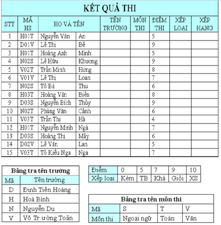
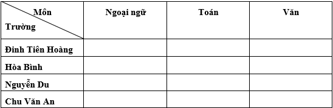

Bài tập Excel 11:
Nhập và trình bày bảng tính như sau:

Yêu cầu:
Câu 1: Điền tên trường dựa vào ký tự bên trái của MÃ HS và Bảng tra tên trường.
Câu 2: Điền MÔN THI dựa vào ký tự cuối cùng của MÃ HS và Bảng tra tên môn thi
Câu 3: Điền giá trị cột XẾP LOẠI dựa vào bảng xếp loại.
Câu 4: Điền giá trị cột XẾP HẠNG (xếp thứ tự theo độ dốc) dựa vào ĐIỂM THI
Câu 5: Trích ra danh sách các thí sinh thuộc trường Chu Văn An (Lưu ý: Định dạng lại tiêu đề HỌ VÀ TÊN nằm ở 2 ô ứng với cột HỌ và cột TÊN rồi mới rút trích)
Câu 6: Trích ra danh sách học sinh xếp hạng từ 5 trở lên.
Câu 7: Thực hiện bảng thống kê sau:

Câu 8: Vẽ đồ thị biểu diễn dữ liệu thống kê trên.